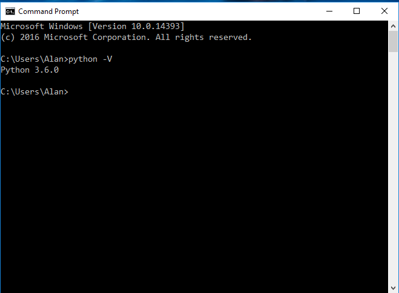
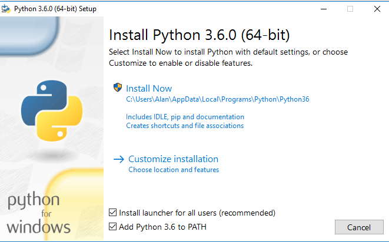

Checking For Python 3
To check to see if you already have Python 3 installed on your computer, open a command window and type:
python -V
or
python3 -V
Here are the results from a Windows computer:

The results from a Linux or Mac computer should look very similar.
If you have Python3 already installed, skip down to Installing ZeroMQ.
Installing Python 3
If you need to install Python3 on your computer, I recommend using the latest version as of this writing, version 3.6. If you have an earlier version already installed, upgrading to Python 3.6 is not necessary.
Windows Users
To install Python 3.6 or later, go to the Python home page, and download the 3.6.0 (or later) distribution for your operating system.
If you have Python 2.7 installed, you do not need to remove it.
During the installation process, if there is a checkbox to add Python 3.6 to your path, make sure it is checked before proceeding with the installation.

Linux/Mac Users
If you are using linux, here are the build and installation instructions
- sudo apt-get update
- sudo apt-get upgrade
- sudo apt-get dist-upgrade
- sudo apt-get install build-essential python-dev python-setuptools python-pip python-smbus
- sudo apt-get install build-essential libncursesw5-dev libgdbm-dev libc6-dev
- sudo apt-get install zlib1g-dev libsqlite3-dev tk-dev
- sudo apt-get install libssl-dev openssl
- cd ~
- mkdir build
- cd build
- wget https://www.python.org/ftp/python/3.6.0/Python-3.6.0.tgz
- tar -zxvf Python-3.6.0.tgz
- cd Python-3.6.0
- ./configure
- make
- sudo make install